Огляд системи: навіщо вона, з чого складається і як нею користуються PM, керівники та PMO.
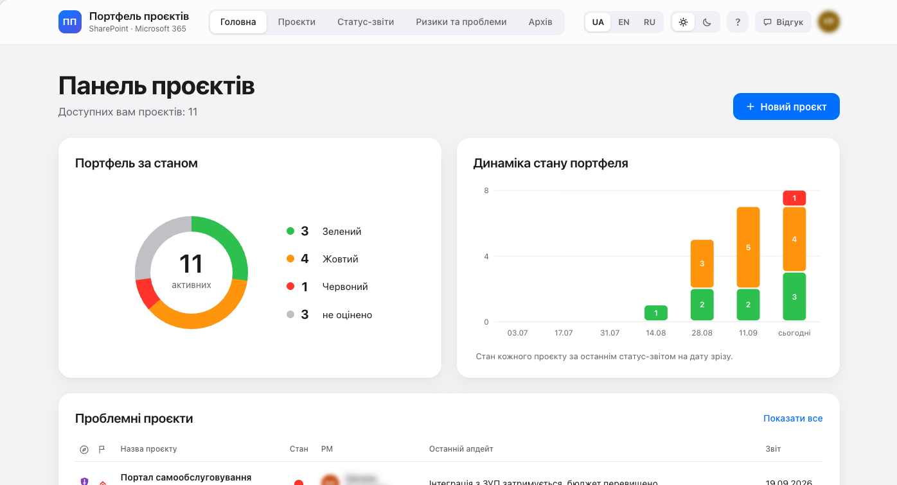
Портфель проєктів — єдине місце, де компанія веде всі проєкти: хто відповідає, у якому вони стані, що змінилося і де потрібне рішення керівництва. Замість таблиць, листів і нарад «що там з проєктом» — одна картка проєкту й регулярний статус-звіт PM.
| Роль | Бачить | Може |
|---|---|---|
| PM проєкту | свій проєкт | редагувати картку, здавати статус-звіти, вести ризики, коментувати |
| Керівники PM (за оргструктурою) | проєкти підлеглих | переглядати й коментувати |
| Власник, стейкхолдери та їхні керівники | проєкти, де роль мають вони або їхні підлеглі | переглядати й коментувати |
| PMO | усі проєкти | створювати нові проєкти й призначати PM; решту — переглядати й коментувати (у своїх проєктах як PM — редагувати) |
| Інші співробітники | порожній портал | — |
Завершений проєкт переходить в архів і стає лише для перегляду для всіх. Керівника бачать за полем «Керівник» у Microsoft 365: CEO бачить усе, бо CIO — його підлеглий; фінансовий директор — лише проєкти, де роль має він або його підлеглі.
Система побудована повністю на Microsoft 365 компанії: дані зберігаються в SharePoint, доступ і оргструктура — з Microsoft Entra ID. Зовнішніх сервісів і баз немає.
| Компонент | Що робить |
|---|---|
| Застосунок (SharePoint Framework) | Інтерфейс порталу: сторінки, картка проєкту, форми статус-звіту, ризику, проєкту й коментаря. Збережене видно на екрані одразу. |
| Списки SharePoint | Усі дані порталу. Звичайні списки лишаються для адміністраторів, вивантаження в Excel і Power BI. |
| Синхронізація | Кожні 15 хвилин у робочий час: переносить статус-звіт у картку проєкту, веде журнал змін, відправляє завершені проєкти в архів, видає права за оргструктурою, оновлює «Доступ до картки». Раз на тиждень — повний перерахунок прав. |
| Microsoft Entra ID | Облікові записи, керівники, посади — джерело прав за ієрархією. |
| Відгуки (лише тест) | Кнопка «Відгук»: текст, скриншоти, екран і пристрій — у окремий список для розбору зауважень. |
Стан портфеля за видимими користувачу проєктами: кільце за станом, динаміка за 12 тижнів (зріз кожні два тижні), далі — проблемні проєкти, проєкти без свіжого звіту, запити на рішення керівництва й відкриті ризики.
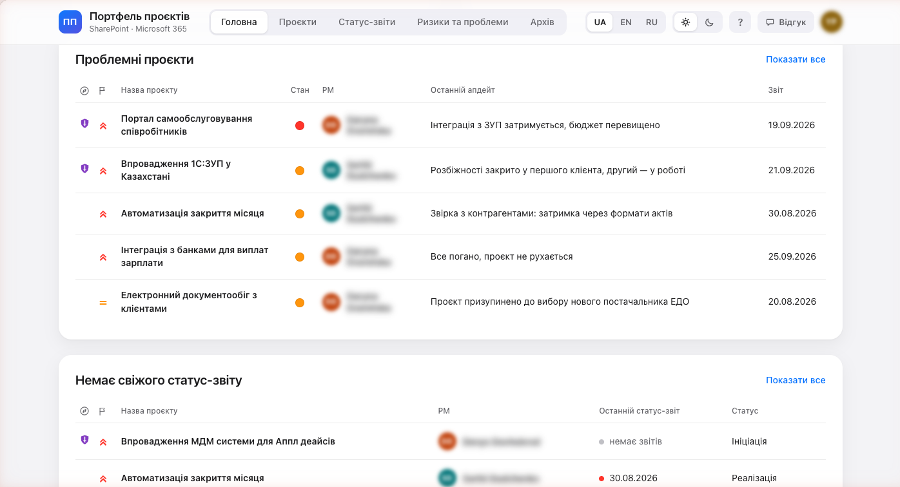
Плитки для швидкого огляду або таблиця з сортуванням, фільтрами за значеннями й вибором колонок. Подання: Усі проєкти, Стратегічні, Проблемні, Мої проєкти, Немає свіжого звіту. Нові записи — угорі.
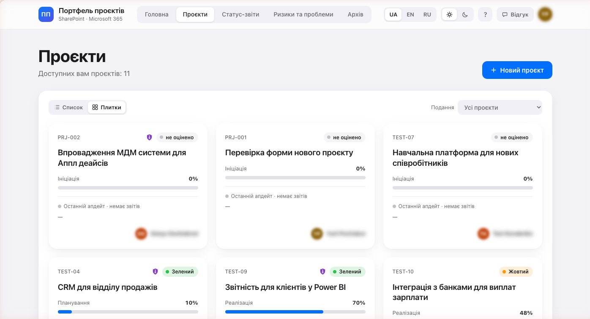
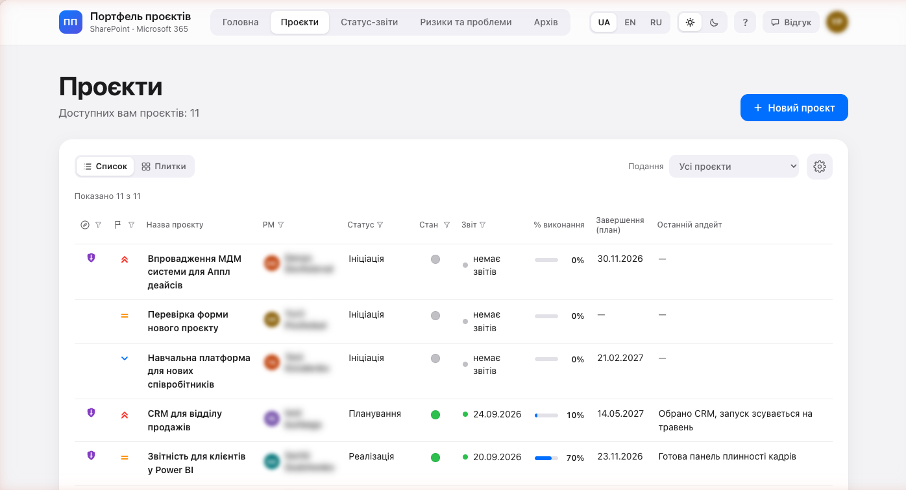
Усе про проєкт в одній панелі: учасники, терміни з відхиленням прогнозу, бюджет і виконання, історія змін, коментарі, історія станів, статус-звіти, ризики та «Доступ до картки». Посиланням на картку можна поділитися.
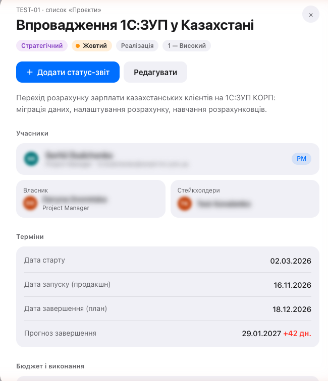
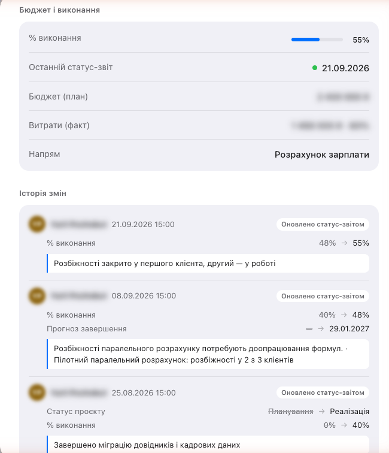
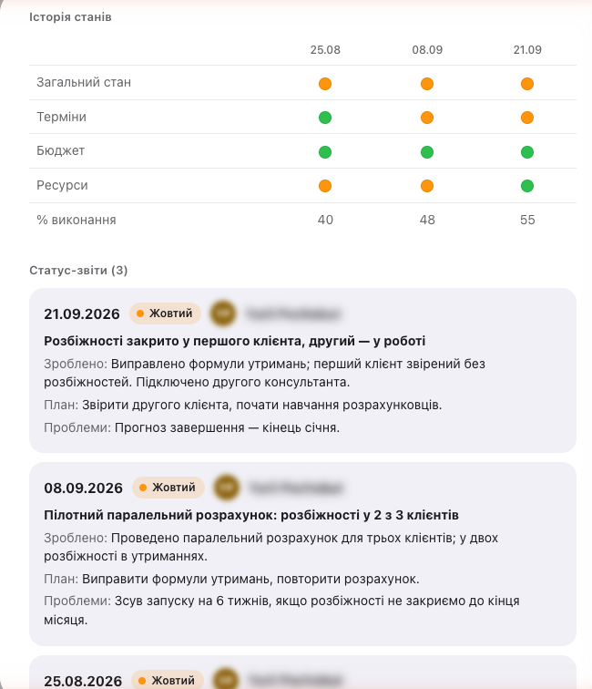
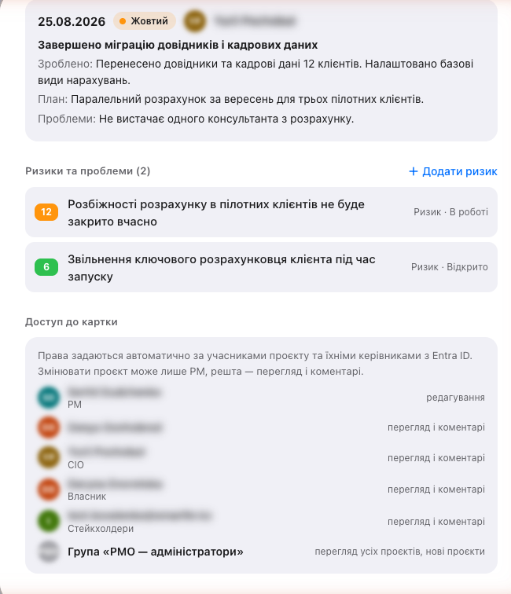
PM оцінює терміни, бюджет і ресурси — загальний стан рахується сам. Ключові показники вже заповнені поточними значеннями; змінюється лише те, що змінилося. Якщо змінено статус, тип або дату, з'являється обов'язкова «Причина зміни показників».
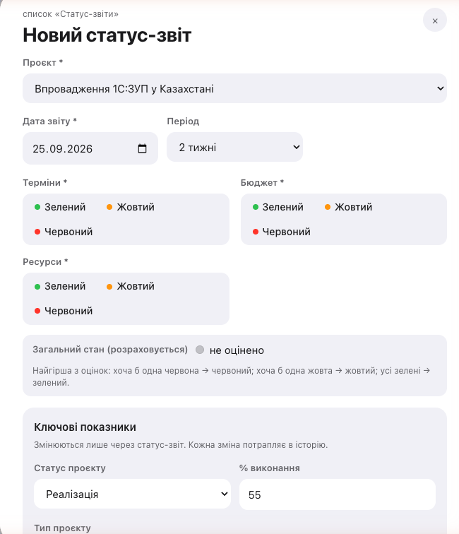
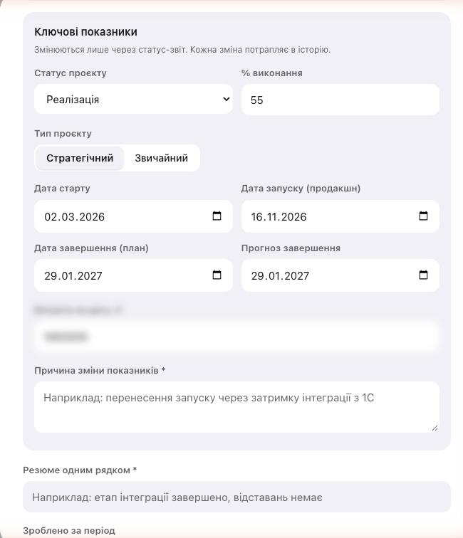
Реєстр ризиків і проблем усіх видимих проєктів з оцінкою, власником, статусом і терміном. Форма ризику рахує оцінку одразу й пояснює кожен бал шкали.
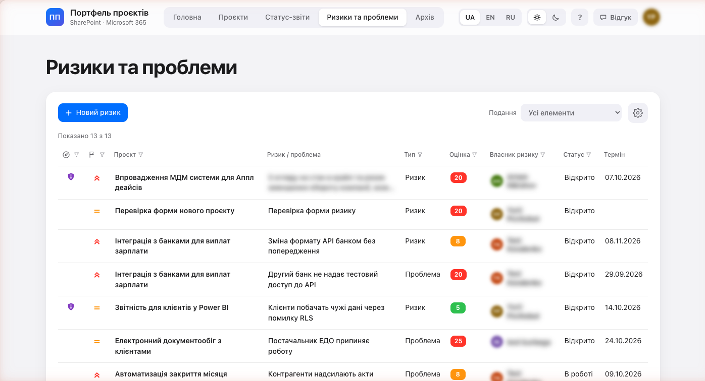
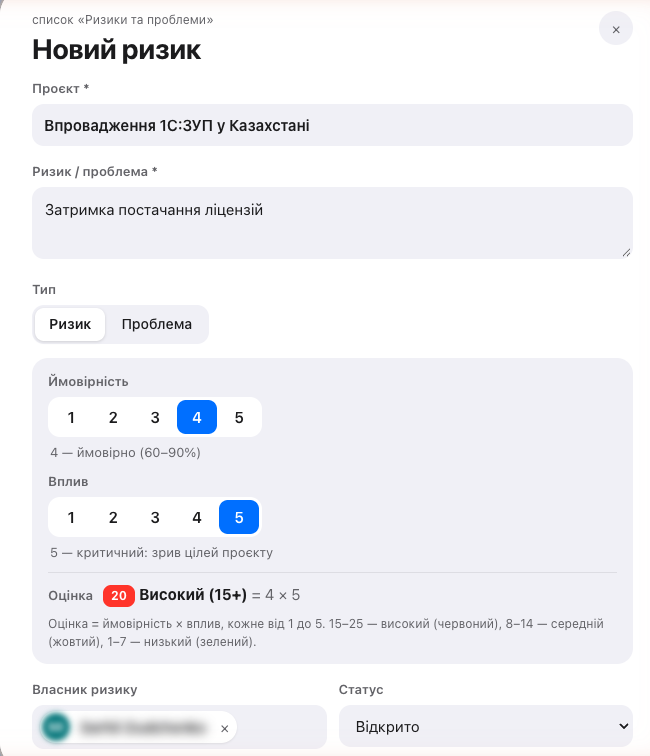
Ймовірність і вплив — від 1 до 5, кожен бал має опис (наприклад, 4 — «ймовірно, 60–90%», 5 — «критичний: зрив цілей проєкту»).
Оцінка = ймовірність × вплив. 15–25 — високий (червоний), 8–14 — середній (жовтий), 1–7 — низький (зелений).
Прострочений термін відкритого ризику виділяється червоним; закриті ризики зникають з подання «Відкриті».
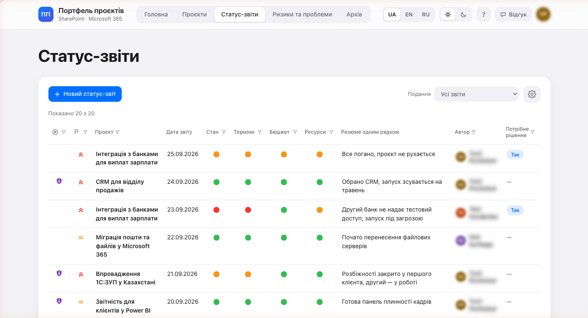
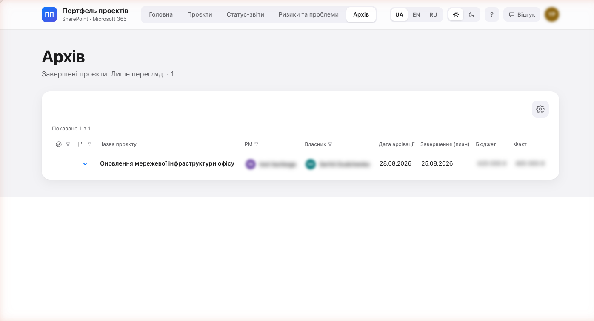
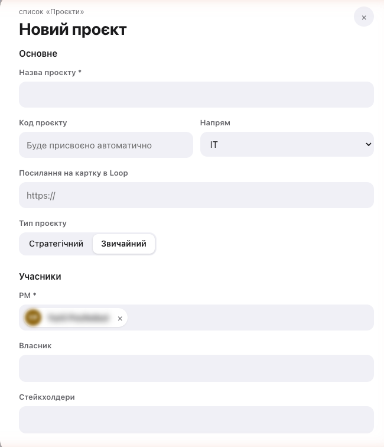
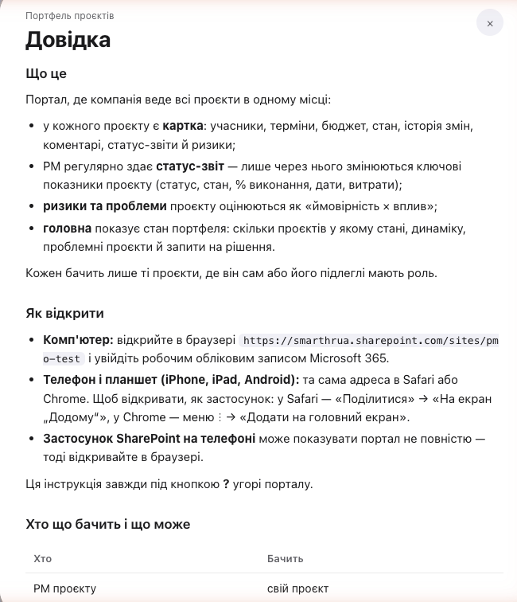
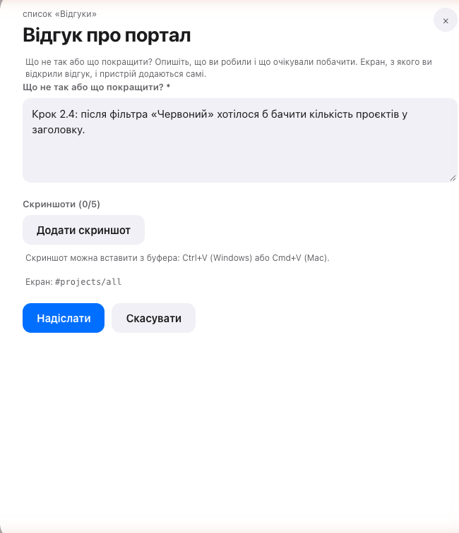
Кожен учасник залишає відгук прямо з того екрана, де помітив проблему. До 5 скриншотів; на комп'ютері — вставка з буфера (Ctrl+V / Cmd+V).
Усі відгуки збираються в один список: PMO бачить відгуки всіх учасників, ставить статус розгляду й відповідь, вивантажує в Excel.
Портал відкривається в браузері телефона й планшета без окремого застосунку: сторінки підлаштовуються під ширину, картка й форми — на весь екран, кнопка «Зберегти» завжди видна.
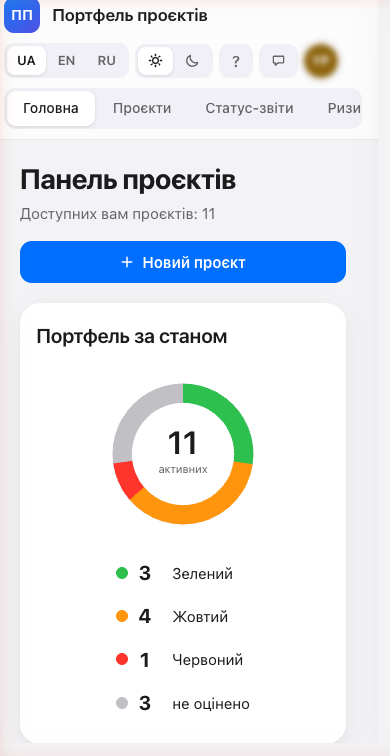
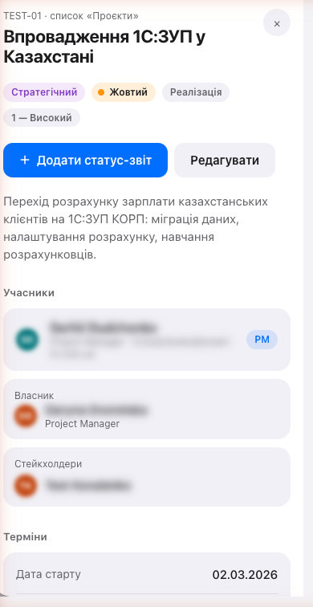
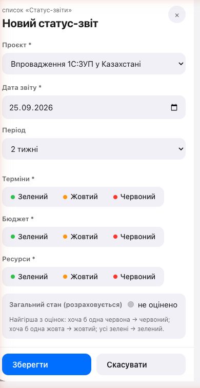
| Етап | Стан |
|---|---|
| Списки, права, синхронізація | готово, тестовий сайт |
| Застосунок: головна, проєкти, картка, форми, телефон | готово, тестовий сайт |
| Тестування з фокус-групою (PM, PMO) | триває |
| Синхронізація в хмарі (Azure Automation) | очікує підписку Azure |
| Microsoft Teams, запуск на всю компанію | після розбору відгуків |
| Документ | Для кого |
|---|---|
| Інструкція користувача (UA / EN / RU) — також «Довідка» в порталі | усі користувачі |
| Плани тестування — PM і PMO | учасники фокус-групи |
| Технічне завдання | PMO, ІТ |
| Розгортання й адміністрування | ІТ, адміністратори SharePoint |
Усі документи ведуться в репозиторії проєкту разом із кодом, тож оновлюються разом зі змінами системи.